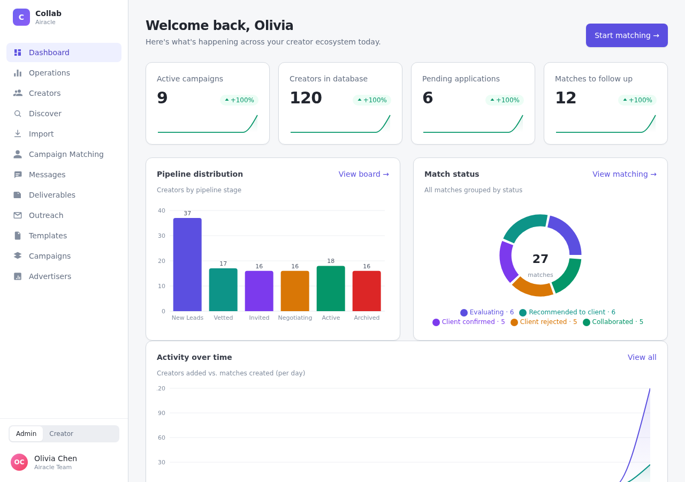

还原真实流程
先看用户如何完成任务、信息在哪丢失，再判断应当产品化的环节。
SELECTED IMPACT
这些数字来自已投入真实业务的近期项目和经过治理的数据资产。对暂时无法证明的商业结果，我会明确写出边界，而不是包装成增长故事。
SELECTED WORK
不是项目清单，而是三段可以被追问的决策记录：如何把线下协作变成产品，如何让 AI 参与判断，以及如何诚实地评价一次完整交付。
将 Telegram、WhatsApp、邮件与社媒私信中的人工协作，重构为品牌、运营、创作者三方可追踪的线上流程。

让运营从逐个搜索达人，转向需求结构化、智能筛选、匹配解释与人工复核协同。
从一句“需要一个官网”，推进到多语言、多页面、可发布的全球品牌站；工程交付成立，但商业效果不被夸大。
HOW I WORK
我不把产品经理理解为写文档的人。真正的工作，是在用户、业务与技术约束之间作出可以验证的选择，并为结果留下清晰证据。
先看用户如何完成任务、信息在哪丢失，再判断应当产品化的环节。
把角色、权限、条件和异常变成研发可执行、测试可验收的规则。
从 PRD、交互和评审推进到测试、部署，不把“已开发”当作“已完成”。
区分交付指标和业务指标；数据不足时明确边界，并设计下一步闭环。
北京 · 可沟通 AI 应用产品经理、B 端产品经理机会
ABOUT
我在六人规模的早期团队中负责品牌出海营销相关产品，工作边界覆盖业务调研、流程梳理、PRD、交互、AI 辅助实现、测试和生产部署。代码由 AI 工具辅助生成并由开发人员参与复核；线上故障处理由其他开发人员负责。对协作边界说清楚，是产品可信度的一部分。
推动服务流程标准化与核心环节智能化，支持全球达人营销项目交付。
工科训练让我习惯在约束条件中拆解复杂问题，并持续补充产品与技术能力。
LET'S TALK
欢迎沟通 AI 应用、B 端工作流与 0→1 产品岗位。我会带着真实项目、明确边界和可继续验证的问题进入下一次讨论。